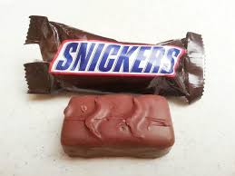

baton z nugatem, orzeszkami ziemnymi w karmelu i czekoladzie produkowany przez Mars. Stworzył go Franklin Clarence Mars w 1930 roku.
W 1910 roku Franklin ożenił się ponownie z Ethel V. Healy. Bardziej wspierająca, niż jego pierwsza żona, Ethel pomogła mu uruchomić małą firmę cukierniczą o nazwie Mars Inc w Tacoma w stanie Waszyngton. Firma powstała w 1911 roku, jednak nie odniosła zbyt dużego sukcesu. W 1920 roku Franklin i Ethel przeprowadzili się do Newport w Minneapolis i założyli kolejną firmę o nazwie "Mar-O-Bar Company", a w 1923 roku rozpoczęli pod jej szyldem sprzedaż batonika Milky Way. Nowy batonik okazał się prawdziwym hitem, więc pod koniec lat dwudziestych firma prosperowała już całkiem nieźle. W 1929 roku Franklin i Ethel przenieśli firmę do Chicago, gdzie zamieszkali.
cukier, syrop glukozowy, orzeszki ziemne, odtłuszczone mleko w proszku, tłuszcz kakaowy, miazga kakaowa, olej słonecznikowy, laktoza, serwatka w proszku (z mleka), tłuszcz mleczny, tłuszcz palmowy, sól, emulgator (lecytyna sojowa), białko jaja w proszku, białko mleka, naturalny ekstrakt z wanilii